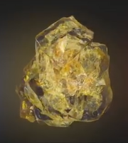
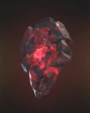
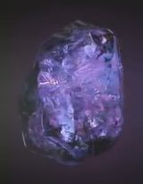

| Название |
Цвет |
Описание |
Иллюстрация |
| Камень пространства |
Синий |
Даёт возможность перемещать как себя, так и всё окружающее в любую точку |
 |
| Камень разума |
Жёлтый |
Наделяет своего обладателя эмпатией, телепатией и телекинезом |
 |
| Камень реальности |
Красный |
Изменяет реальность по усмотрению обладателя |
 |
| Камень силы |
Пурпурный |
Повышает силу, прочность и все остальные способности своего обладателя, а также питает остальные пять артефактов |
 |
| Камень времени |
Зелёный |
Позволяет путешествовать во времени, а также останавливать, замедлять и ускорять временной поток. Помимо этого, камень также замедляет старение своего обладателя |
 |
| Камень души |
Оранжевый |
Данный камень позволяет забирать души других живых существ. Внутри него находится так называемое «карманное измерение», в котором обитают те, чьи души забрал владелец камня |
 |